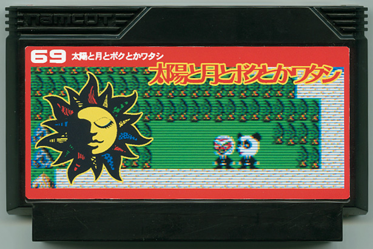

" 太陽と月とボクとかワタシ "
江南 匡晃 / Tシャツ屋
Official Site
謎の覆面男「ジョニー」とパンダの着ぐるみ男「ジョナサン」。
お互いに「素顔」を知らない同士の二人がある事件をキッカケに「本当の自分」を取り戻す事を目標に辛く長い旅を始める。
一癖も二癖もある濃い人々との「出会い」によって奇妙な二人組の過去が明かに。
彼等の「本当の自分」とは一体？！
個性派俳優が出演した人気映画がRPGになってついに登場！！